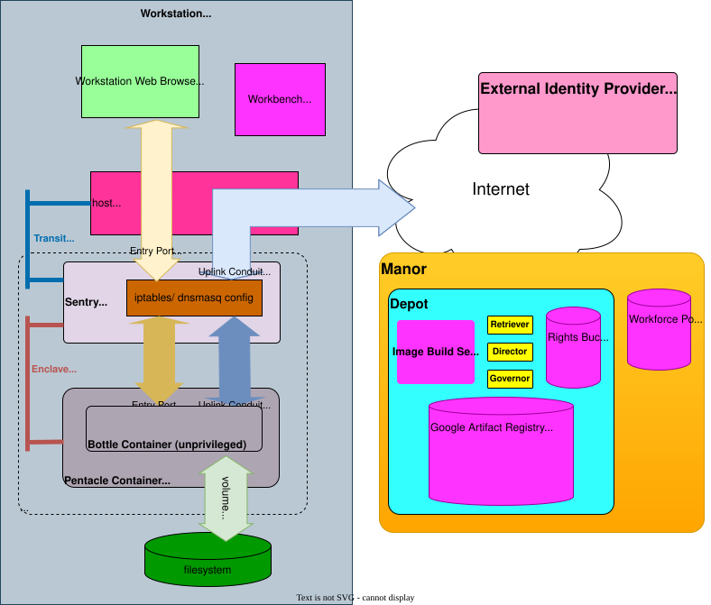

1. Overview
The Recipe Bottle Workbench enables developers to safely run untrusted containers — a significantly distinct use case than typical container deployments of carefully crafted code.
While containers excel at packaging known applications, running third-party or experimental code poses security risks. The Recipe Bottle Workbench addresses this by interposing a security layer (Sentry Container) between untrusted containers (Bottle Containers) and system resources, without requiring modifications to existing container images.
This approach allows developers to leverage the vast ecosystem of containerized tools while maintaining strict security boundaries — essential for small teams experimenting with diverse, potentially risky codebases.
2. Accomplished Infrastructure
The Recipe Bottle Workbench migrated from GitHub Actions and GHCR to Google Cloud Build (GCB) and Google Artifact Registry (GAR) in August 2025. GHCR violated OCI specification for reference counting, and GitHub Actions’ shared runner environment enabled cache poisoning attacks — both unacceptable for building containers from untrusted code.
GCB and GAR provide isolated build environments, SLSA Build Level 3 attestations (verified end-to-end March 2026), reference-counted layer management, and native vulnerability scanning. The project’s build infrastructure was converted from Makefiles to pure bash, and the container runtime switched from podman to docker in December 2025.
3. The Recipe Bottle Workbench Vision

Maintaining build and service environments is a headache for the small development organization. Containers are an amazing tool for controlling package version constellations. Necessary, but insufficient; I find that I need more redundancy, security, and control for my build setups.
The Recipe Bottle Workbench is my answer for filling in the gaps. The vision is simple: how can an Operator run only a few apps natively on a Workstation to coordinate and arrange Containers in sophisticated yet safe ways for me and my customer’s work?
Recipe Bottle Workbench uses only bash, git, curl, openssh, jq and a
Container Runtime
(currently docker) natively to produce a safe and controlled space for development involving
Containers
heavily.
Recipe Bottle Workbench
itself is largely a set of bash scripts designed to be easily incorporated into arbitrary projects via
git subtree, git subrepo, or git submodule
graft.
This is purely an open-source undertaking.
3.1. Part One: Container Image Management
The Recipe Bottle Workbench streamlines Container Image creation and curation through Google Cloud Build (GCB) and Google Artifact Registry (GAR). The Build Service:
-
Constructs Container Images in clean, isolated environments using Google-curated Cloud Build builder images
-
Replicates trusted external images into GAR with digest preservation and provenance tracking
-
Supports multi-architecture builds via
docker buildxwith binfmt emulation -
Generates software bills of material for compliance
-
Captures and stores full build transcripts for provenance
-
Maintains build transcripts, SBOMs, and commit references in an auxiliary metadata artifact separate from the runtime image
-
Provides local trust posture plumbing (
rbf_plumb) with compact and full views of build provenance, SLSA attestations, SBOM contents, and vouch verification results -
Stores validated Container Images in Google Artifact Registry, tagged with minimal non-invasive labels
This dual approach — building custom images and importing vetted external ones — ensures all container images used in development have known provenance and consistent tagging. Small teams can maintain a curated registry combining custom-built tools with carefully selected upstream images, all traceable through GAR’s unified storage.
The system uses only
curl,
jq,
and
bash
scripts
to orchestrate both remote
Container Image
construction and registry-to-registry replication, enabling small teams to maintain enterprise-grade
Container Image
management practices without complex tooling.
gcloud is never required on the
Workstation;
it appears only inside Google-managed Cloud Build step containers (e.g. gcr.io/cloud-builders/gcloud) where it runs server-side during remote builds.
Auxiliary provenance data, including the per-platform SBOM (sbom.linux_amd64.spdx.json), build transcript, build configuration snapshot, and key package summaries, is bundled into a compressed archive and uploaded to GAR as a Generic Artifact using the image tag as the package name and a fixed metadata version identifier.
This design keeps the primary image minimal and broadly usable while making rich build history available to those who need it.
3.2. Part Two: Crucible Orchestration
For development services requiring internet and/or IP connectivity at the Workstation, Recipe Bottle Workbench then orchestrates startup and configuration of Crucibles, which are comprised of a Sentry Container, a Pentacle Container, and a Bottle Container operating together.
The Recipe Bottle Workbench allows any Container Image providing or using network services to function as a Bottle Container. The Pentacle Container establishes a privileged network namespace, configures it to route all traffic through the Sentry Container, then shares this pre-configured namespace with the Bottle Container. This ensures security policies are enforced from the first packet, and the Bottle Container experiences only a functional path to its Sentry Container gateway.
The
Sentry Container
thus sets up a potentially sophisticated set of network security safeguards that prevent malicious or compromised
Bottle Containers
from exfiltrating the
Operator’s
assets.
Through configuration of deeply mature tools iptables and dnsmasq, the
Sentry Container
prevents such illegal accesses.
By providing these controlled yet accessible tools, the Recipe Bottle Workbench enables small development teams to maintain proper container hygiene throughout their workflow — from initial building through deployment and eventual cleanup. This empowers organizations to leverage the expanding ecosystem of containerized development tools without requiring specialized DevOps expertise.
4. Project Direction
The following themes represent future directions for Recipe Bottle, drawn from the project’s horizon roadmap.
Build pipeline security hardening. Egress lockdown, VPC Service Controls, cosign image signing, and Binary Authorization are evaluated and consciously deferred. Each has a defined trigger condition — they activate when compliance requirements, threat models, or deployment targets change. Full analysis lives in the Cloud Build security posture documentation.
IAM identity infrastructure. Service account numeric IDs for faster propagation, universal read-back verification after IAM grants, and universal SA preflight checks. These reduce retry frequency and strengthen grant correctness guarantees.
Container runtime expansion. Rootless deployment, macOS-native workflows, and alternative container runtimes beyond the current docker-on-Linux model.
5. Links
Source repository: github.com/scaleinv/recipebottle
Project page: scaleinv.github.io/recipebottle
6. Significant Events
| Date | Event |
|---|---|
Dec 10, 2023 |
First try at wrangling Docker in local cygwin environment. |
Mar 18, 2024 |
Embrace multiple ephemeral docker container images for single build. |
Aug 7, 2024 |
Started Jupyter Notebook in docker container. |
Aug 11, 2024 |
Learned docker can’t connect to host and internal network simultaneously. |
Aug 17, 2024 |
Switched to podman for better networking. |
Sep 2, 2024 |
First attempt to use asciidoc for concept models. |
Oct 7, 2024 |
GitHub Action performed docker Container Image build. |
Nov 2024 |
Bespoke Bottle Container images with custom networking use Sentry Container networking via Claude curated requirements and script generation. |
Dec 2024 |
Experiments to start unmodified Bottle Container images using podman networking configurations fail. |
Dec 31, 2024 |
Submitted Podman feature request issue #24920 for gateway feature. |
Jan 6, 2025 |
Feature request issue #24920 rejected. |
Jan 2025 |
Podman 5.2 VMs running unmodified Bottle Container images using VM network namespace machinations. |
Feb 2025 |
Podman 5.3 VM update breaks previous, and reversion to 5.2 fails due to reissued VM. Podman VM tags determined not immutable. |
Mar 2025 |
Developed full reproducibility scenarios and determined that VM network namespace approach no longer valid. |
June 25, 2025 |
Attempting to use eBPF frame rewriting to bypass Netavark gateway behaviors lead to third container concept. |
July 3, 2025 |
Pentacle Container as privileged network namespace configurator hosting unprivileged Bottle Container functions; all Sentry Container/Bottle Container test cases pass again. |
July 27, 2025 |
GHCR Container Image deletions determined unsafe due to lack of OCI-specified reference counting on layers; deleting old images can destroy new ones. |
Aug 5, 2025 |
Abandoned GitHub Actions and GHCR for Google Cloud Build and Google Artifact Registry — isolated build environments, SLSA attestations, reference-counted layer management. |
Aug 23, 2025 |
First GCP project provisioned with role-based service accounts: Governor, Director, Mason, and Retriever — no single credential has full access. |
Dec 29, 2025 |
Switched container runtime from podman to docker. Entire bottle lifecycle rewritten from Makefile to pure bash. |
Jan 13, 2026 |
Job Jockey initiative tracker rewritten in Rust, enabling structured multi-heat development with machine-readable commit discipline. |
Mar 2, 2026 |
Cloud Build v2 migration: replaced Developer Connect with CB v2 connections and Secret Manager PAT retrieval, decoupling the build pipeline from GitHub. |
Mar 5, 2026 |
SLSA Build Level 3 provenance verified end-to-end — single-architecture and multi-platform, dual provenance signatures (v0.1 and v1). |
Mar 13, 2026 |
Bind vessel mode operational: upstream image mirroring to GAR with digest fidelity verification and containerized SBOM generation. |
Mar 14, 2026 |
Graft vessel mode specified: local image push to GAR as third ark arrival path alongside conjure and bind. |